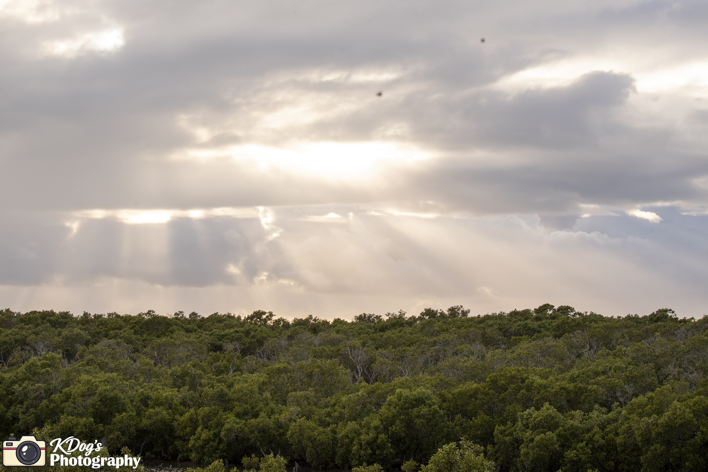
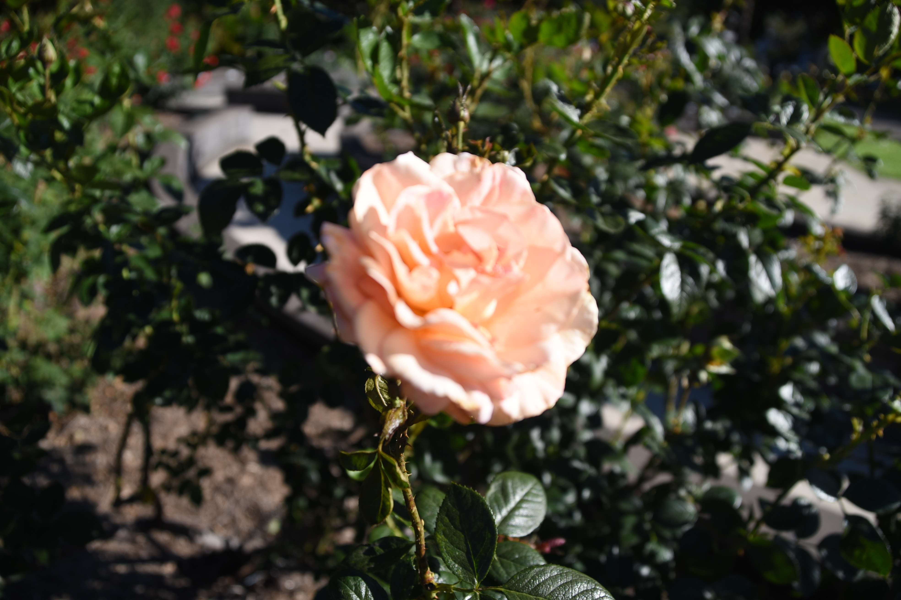

Events
Uni balls, parties, open mics and special occasions.
BRISBANE PHOTOGRAPHER
Events, sports, couples and the real moments in between. Bright, relaxed photography with plenty of energy.

Uni balls, parties, open mics and special occasions.
Clubs, games, fun runs and all the action in between.
Relaxed shoots with genuine moments and real connection.
FEATURED WORK


A BIT ABOUT ME
Kdog's Photography is all about capturing people, moments and energy without making the experience feel stiff or over-produced.
When I'm not photographing events, sport or couples, I enjoy getting outdoors and taking nature and animal photos too.
More about me


GOT SOMETHING COMING UP?
Tell me what you're planning and I'll get back to you with a quote.